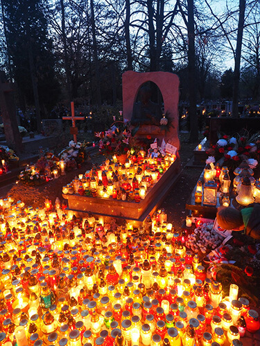
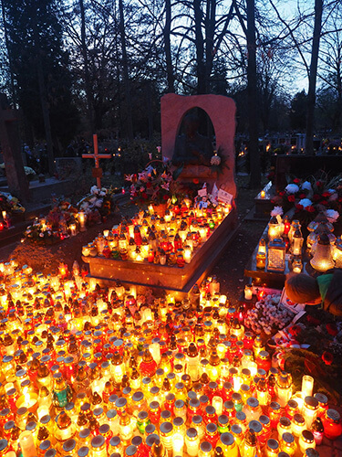
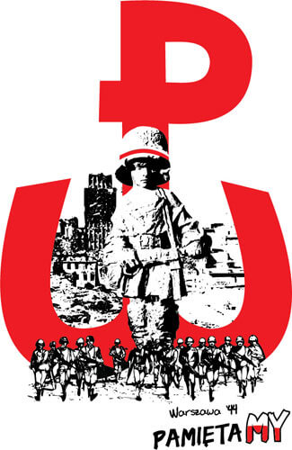
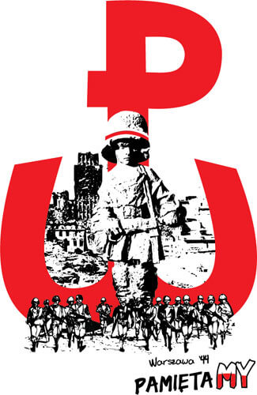

Ngày Độc Lập Quốc Gia
11.11.2020 | Tác giả: @Anna

Ngày Độc lập Quốc Gia được tổ chức ở Ba Lan vào ngày 11 tháng 11. Đây là ngày quốc khánh kỷ niệm đánh dấu sự khôi phục chủ quyền của Ba Lan sau Thế chiến thứ nhất. Vào cuối thế kỷ 18, Ba Lan bị phân chia bởi các Đế chế Đức, Áo-Hung và Nga. Sau đó Ba Lan không còn tồn tại trong 123 năm cho đến khi Thế chiến thứ nhất kết thúc. (...)

Ngày 11 tháng 11 là ngày Nguyên soái Józef Piłsudski nắm quyền kiểm soát Ba Lan.
Kể từ năm 1920, nó đã trở thành một ngày của lễ duyệt binh.
Sau đó, vào năm 1937, nó được coi là một ngày lễ quốc gia.
Nhưng nó chỉ được kỷ niệm hai lần trước Thế chiến thứ hai. Sau chiến tranh, Ngày
Độc lập đã bị chính quyền Cộng hòa Nhân dân xóa khỏi lịch
và được thay thế bằng Ngày Phục Hưng Quốc gia của Ba Lan vào ngày 22 tháng 7, là
ngày kỷ niệm tuyên ngôn cộng sản dưới thời Joseph Stalin.
Tuy nhiên, việc giành lại độc lập vẫn được cử hành một cách không chính thức vào
ngày 11 tháng 11.
Tại nhiều thành phố, bao gồm Warsaw, những người ủng hộ Phong trào Đoàn kết
ngoài vòng pháp luật đã tham gia các cuộc tuần hành và ăn mừng không chính thức.
Kể từ khi các cuộc tụ tập ăn mừng vào ngày 11 tháng 11 bị nhà cầm quyền cộng sản
cấm, nên các cuộc tuần hành đã bị lực lượng cảnh sát quân sự cộng sản giải tán
một cách tàn bạo, với nhiều người tham gia bị bắt.
Ngày Độc lập vào ngày 11 tháng 11 được khôi phục khi Ba Lan nổi lên từ chủ nghĩa
cộng sản vào năm 1989.
Ngày nay, tổng thống đang tham gia các lễ kỷ niệm chính thức Ngày Độc lập Quốc
gia ở Warsaw.
Họ bắt đầu vào buổi sáng với thánh lễ trọng thể và đặt hoa tại tượng đài của
những người cha của nền độc lập Ba Lan: Wincenty Witos, Ignacy Paderewski,
Ignacy Daszyński, Wojciech Korfanty và Roman Dmowski và thống chế Józef
Piłsudski.
Vào buổi chiều, lễ kỷ niệm diễn ra tại mộ của một người lính vô danh và cuộc
diễu hành của các đội hình quân sự diễu hành qua thành phố.
Vào ngày Quốc khánh Ba Lan, cờ Ba Lan được trưng bày trước nhiều ngôi nhà và căn
hộ.
Ngày lễ các Thánh - Thờ cúng người đã mất ở Ba Lan
24.10.2020 | Tác giả: @Anna
 

Hơn 80% người Ba Lan theo đạo Thiên chúa. Vì vậy, vào ngày 1 tháng 11, ngày lễ các vị thánh (All Saint’s Day), các con đường đều chật kín người đi viếng mộ người thân đã khuất của họ. Nhiều người sinh sống ở trong và ngoài nước đều quay trở về quê của họ vào ngày này. (...)
Ngày này có liên quan với Ngày lễ các linh hồn (All Soul’s Day), ngày 2 tháng 11,
ngày mà những lời cầu nguyện được gửi đến tất cả các linh hồn.
Có rất nhiều đám rước xung quanh nhà thờ và nghĩa địa,
bao gồm năm trạm, trên đó các thành viên nhà thờ cầu nguyện cho các giám mục và
linh mục đã khuất,
người thân, ân nhân và tất cả những người đã khuất. Vào cả hai ngày đó, bạn có
thể thấy nghĩa trang đầy hoa và được thắp sáng bằng nến.
Đêm giữa Ngày lễ các Thánh (All Saint’s Day) và Ngày lễ các linh hồn (All Souls’
Day), hay còn được gọi là Đêm của các Linh hồn (All Souls’Night)
or Dziady,luôn đóng một vai trò đặc biệt trong quan niệm và các nghi lễ
dân gian.
Người ta tin rằng vào đêm đó, những hiện tượng siêu linh có thể ảnh hưởng đến
thực tại.
Linh hồn của những người chết được giải thoát khỏi địa ngục và lang thang dọc
theo các ngã tư
và nghĩa trang - tìm kiếm sự giúp đỡ, cầu nguyện hoặc hy sinh.
Việc đốt nến được thực hiện trong các trang trại và khu mộ để chỉ cho họ đường
về nhà,
vì người ta tin rằng các linh hồn sẽ đến thăm những nơi họ đã sống trong suốt
cuộc đời của họ
hoặc nơi thi thể của họ được chôn cất. Người ta tin rằng việc rời khỏi nhà vào
đêm đó là rất nguy hiểm
và thậm chí vào thế kỷ 19, mọi người vẫn sợ hãi rời khỏi nhà của họ vào Đêm các
linh hồn.
Họ không đi du lịch hoặc thăm hàng xóm, vì không phải mọi hồn ma đều có ý định
tốt.
Mọi người cũng tránh xa các nhà thờ khi các linh mục quá cố đang cử hành thánh
lễ cho người chết.
Trong nhiều nhà thờ, sách lễ được để trên bàn thờ và các cửa đền thờ được mở cho
đêm đó.
Các quán rượu đóng cửa và âm nhạc và ca hát bị cấm vào Đêm các linh hồn, nhưng
các lễ kỷ niệm khác
vẫn diễn ra. Để chờ đợi sự viếng thăm từ các linh hồn, thức ăn và rượu đã được
chuẩn bị và để
trên ngưỡng cửa hoặc bia mộ. Các hoạt động khác nhau như đập bơ, giẫm nát bắp
cải, dệt vải và đổ nước rửa
hoặc khạc nhổ đều bị cấm vì nó có thể làm phiền các linh hồn hoặc thậm chí đe
dọa họ.
Người ta tin rằng trong giờ ma quái, các linh hồn sẽ có dấu hiệu hiện diện của
họ bằng cách đập,
kêu cót két sàn nhà và thiết bị, mở cổng và cửa ra vào hoặc lần theo đống tro
tàn.
Đôi khi họ xuất hiện dưới dạng bóng tối, ngọn lửa hoặc ánh sáng hoặc thậm chí là
hình dạng cũ của họ.
Ở miền tây Ba Lan, hầu hết các truyền thống tổ chức lễ đều tại nhà hoặc trên mộ
để đảm bảo sự ưu ái từ người chết
và giúp họ đạt được hòa bình. Ở miền đông Ba Lan, thực phẩm và quà tặng được
mang đến nhà thờ
và nghĩa trang cho những người ăn xin, yêu cầu họ cầu nguyện cho những người
thân đã khuất của người cho,
vì người ta tin rằng hồn ma có thể mang hình dạng của một người ăn xin.
Hiện tại, truyền thống Dziady hầu như đã bị lãng quên và được biết đến
nhiều nhất từ
bộ phim truyền hình của Adam Mickiewicz cùng tên. Mặc dù những ngọn nến trên
bia mộ bắt nguồn
từ lửa, được thắp sáng để chỉ đường cho các linh hồn về nhà, và bạn không thể
gặp nhiều người
trong nghĩa trang vào đêm ngày 1 tháng 11.
Khởi nghĩa thủ đô Vác-sa-va
01.08.2020 | tác giả: @Robert
 

Hàng năm, trong suốt cuộc nổi dậy Warsaw ở Ba Lan lúc 17:00 (5 giờ chiều múi giờ ở Ba Lan), tiếng còi vang lên để kỷ niệm cuộc nổi dậy Warsaw và mọi người đứng lên. Không quan trọng dù đó là đường, phố - bạn hãy im lặng 1 phút để bày tỏ sự kính trọng đối với những người lính đã ngã xuống.
Đó là một trong những sự kiện thực sự đẹp ở Ba Lan - sẽ không bao giờ ngừng bắt đầu.
Nó sẽ tồn tại mãi mãi trong nền văn hóa Ba Lan.(...)
Cuộc khởi nghĩa Warsaw (tiếng Ba Lan: Powstanie Warszawskie; tiếng Đức:
Warschauer Aufstand)
là một hoạt động lớn trong Chiến tranh thế giới thứ hai, vào mùa hè năm 1944,
bởi cuộc kháng chiến ngầm của Ba Lan,
do Quân đội Nhà kháng chiến Ba Lan (tiếng Ba Lan: Armia Krajowa) lãnh đạo giải
phóng Warsaw từ sự chiếm đóng của Đức.
Cuộc nổi dậy diễn ra trùng với thời điểm quân Đức rút lui khỏi Ba Lan trước sự
tiến công của Liên Xô.
Trong khi tiếp cận các vùng ngoại ô phía đông của thành phố, Hồng quân tạm thời
ngừng các hoạt động chiến đấu,
tạo điều kiện cho quân Đức tập hợp lại và đánh bại sự kháng cự của Ba Lan và phá
hủy thành phố để trả thù.
Cuộc nổi dậy đã diễn ra trong 63 ngày với rất ít sự hỗ trợ từ bên ngoài. Đây là
nỗ lực quân sự lớn nhất được
thực hiện bởi bất kỳ phong trào kháng chiến châu Âu nào trong Thế chiến II.
Cuộc nổi dậy bắt đầu vào ngày 1 tháng 8 năm 1944 như một phần của Chiến dịch
chấn động toàn quốc,
được phát động vào thời điểm Cuộc tấn công Lublin – Brest của Liên Xô.
Các mục tiêu chính của Ba Lan là đánh đuổi quân Đức ra khỏi Warsaw trong khi
giúp Đồng minh đánh bại Đức.
Một mục tiêu chính trị bổ sung của Nhà nước Ngầm Ba Lan là giải phóng thủ đô của
Ba Lan và
khẳng định chủ quyền của Ba Lan trước khi Ban Giải phóng dân tộc Ba Lan do Liên
Xô hậu thuẫn có thể nắm quyền kiểm soát.
Các nguyên nhân trước mắt khác bao gồm mối đe dọa về việc Đức sẽ đưa hàng loạt
người Ba Lan có thân hình đẹp để "di tản";
các cuộc gọi của Đài phát thanh Dịch vụ Ba Lan của Moscow về cuộc nổi dậy;
và một người Ba Lan xúc động về khát vọng công lý và sự trả thù chống lại kẻ thù
sau 5 năm bị Đức chiếm đóng.
Ban đầu, người Ba Lan thiết lập quyền kiểm soát đối với hầu hết trung tâm
Warsaw,
nhưng Liên Xô phớt lờ những nỗ lực của Ba Lan trong việc liên lạc bằng sóng vô
tuyến với họ
và không tiến quá giới hạn thành phố. Các cuộc giao tranh ác liệt trên đường phố
giữa người Đức và
người Ba Lan vẫn tiếp tục. Đến ngày 14 tháng 9, bờ đông của sông Vistula đối
diện với các vị trí
kháng chiến của Ba Lan đã bị quân kháng chiến Ba Lan dưới sự chỉ huy của Liên Xô
tiếp quản;
1.200 người vượt sông, nhưng họ không được Hồng quân giúp đỡ. Điều này cùng với
việc không có sự
yểm trợ của không quân từ căn cứ không quân Liên Xô cách đó 5 phút bay, dẫn đến
những cáo buộc
rằng Joseph Stalin đã tạm dừng lực lượng của mình một cách chiến thuật để cho
chiến dịch thất bại
và khiến cho sự kháng cự của Ba Lan bị đè bẹp. Arthur Koestler gọi thái độ của
Liên Xô là
"một trong những tai tiếng chính của cuộc chiến này sẽ xếp hạng nhà sử học tương
lai ngang
hàng đạo đức với Lidice."
Winston Churchill cầu xin Stalin và Franklin D. Roosevelt giúp đỡ các đồng minh
Ba Lan của Anh,
nhưng không có kết quả. Sau đó, không có sự kiểm soát của đường không Liên Xô,
Churchill đã gửi hơn 200 lượt tiếp tế tầm thấp của Không quân Hoàng gia, Lực
lượng Không quân Nam Phi
và Không quân Ba Lan thuộc Bộ Tư lệnh Tối cao Anh, trong một chiến dịch được gọi
là Không vận Warsaw.
Sau khi giành được sự kiểm soát trên không của Liên Xô, Lực lượng Không quân Lục
quân Hoa Kỳ đã gửi một
đợt không kích cấp độ cao trong khuôn khổ Chiến dịch Frantic.
Mặc dù chưa biết con số thương vong chính xác, nhưng ước tính có khoảng 16.000
thành viên của quân kháng chiến
Ba Lan đã thiệt mạng và khoảng 6.000 người bị thương nặng. Ngoài ra, khoảng
150.000 đến 200.000 thường dân
Ba Lan đã chết, hầu hết là do các vụ hành quyết hàng loạt. Người Do Thái bị
người Ba Lan giam giữ đã bị
phơi bày bởi các cuộc thanh trừng từng nhà của người Đức và các vụ trục xuất
hàng loạt toàn bộ khu vực lân cận.
Tổng thương vong của quân Đức lên tới hơn 2.000 đến 17.000 binh sĩ thiệt mạng và
mất tích.
Trong cuộc chiến đô thị, khoảng 25% các tòa nhà của Warsaw đã bị phá hủy.
Sau khi quân Ba Lan đầu hàng, quân Đức đã san bằng một cách có hệ thống 35% diện
tích thành phố.
Cùng với những thiệt hại trước đó đã phải gánh chịu trong cuộc xâm lược Ba Lan
năm 1939 và cuộc nổi dậy
Warsaw Ghetto năm 1943, hơn 85% thành phố đã bị phá hủy vào tháng 1 năm 1945 khi
diễn biến của các sự
kiện ở Mặt trận phía Đông buộc quân Đức phải rời bỏ thành phố.